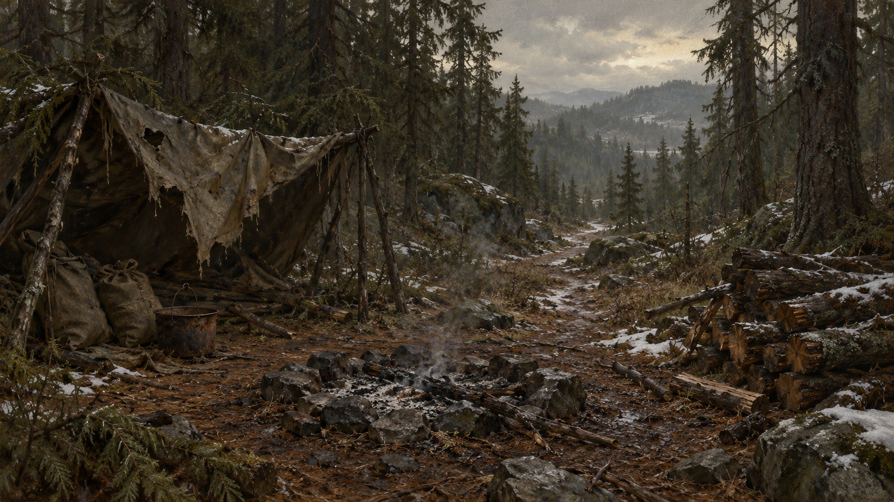
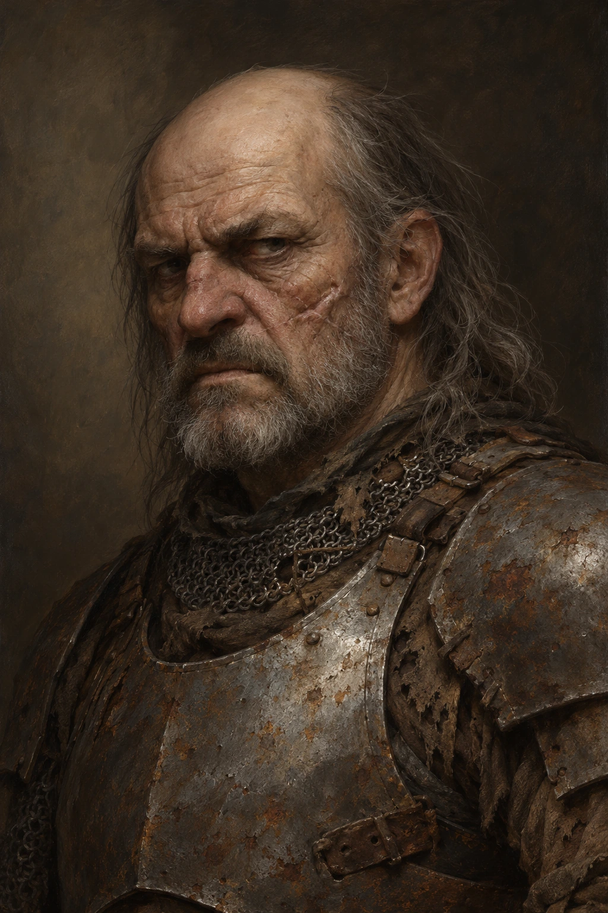
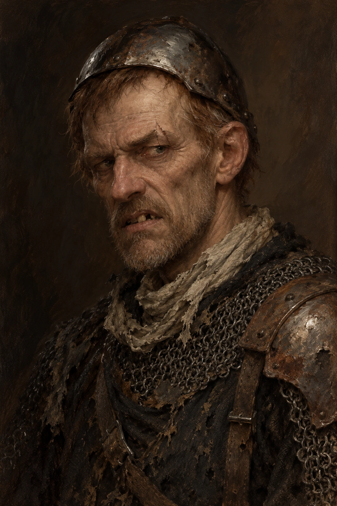
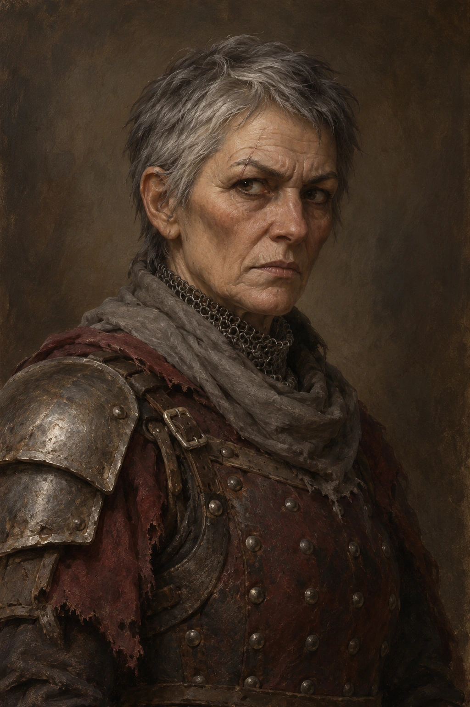

Sönmüş Ocak · Terk Edilmiş Kamp
Harven yolundaki eski kömürcü kampı; atlas üzerinde yeni yerleşim pini değildir · 20–35 dakika · üç oyuncu / 1. seviye
Orman yolunda dinlenecek yer arayan grup eski bir kömürcü kampı bulur. Kamp terk edilmiş görünür; fakat ateşin külü yeni karıştırılmıştır. Bu karşılaşmayı Devrilen Çam pususunun YERİNE seçebilirsin.
Len ve Rusk önceki yol pususundaki AYNI kişilerdir. Orada öldülerse, yakalandılarsa veya ayrıldılarsa burada yeniden doğmazlar; yalnız gerçekten kaçıp gelebilen kişi bulunur. En kolay kullanım: bu kampı yol pususunun yerine oynat. Zırhları yamalı, yüzleri korkutucu; bu bir boss dövüşü değildir. Grubun canı azsa Tova savaşmaz veya yalnız bir haydut kalır. Savaşı kazanmak için üç kişiyi öldürmek gerekmez.
1 · Kül hâlâ ılık
Yırtık çadırın ipleri çamların arasında sarkıyor. Taş ocağın içindeki külün üzerinde yeni bir çizgi var; biri az önce içini karıştırmış. Paslı tencerenin sapı, rüzgâr kesilince de hafifçe sallanıyor.
Islak kütüklerin yanında demir bir omuzluk görüyorsunuz. Sonra omuzluk hareket ediyor. Çadırın karanlığından, zincir halkalarının kumaşa sürtünme sesi geliyor.
Yalnız DM: Len çadırda, Rusk sağdaki kütük yığınının gerisinde, Tova kuzeydeki dar çıkışta. Üçü de yaşlı, insan ve büyüsüz. Kamp, eski kömürcülerden kalma; haydutlar yalnız geçici olarak saklanıyor. Yeni ayak izleri, ılık kül ve hareket eden zırh parçası zarsız fark edilir. Algı başarılı olmasa da tehlikenin belirtileri kaybolmaz. Habersiz sürpriz turu veya kapanan görünmez kapı yok.
Görsel: camp-abandoned

Algı DC 11 · Üç ayrı saklanma yerini seçersin; gözcü Tova kuzey çıkışında.
Başarısızlık: Tam sayıyı çıkaramazsın; ateşin yeni söndüğü ve içeride biri olduğu açıktır.
Sela: “Kül kendi kendine eşelenmez. Katırları açıkta bırakmayalım.”
Sonraki adım: Grup seslenebilir, geri çekilebilir, saklanabilir veya ilerleyebilir. Konuşma ya da yüzleşme için 2. adıma geç.
2 · Eski zırhların içindekiler
Çadırın önündeki adam doğrulurken zırhının bir kayışı kopacak gibi geriliyor. Kel başının iki yanından kirli gri saçlar sarkıyor; yanağındaki eski yara ağzını aşağı çekmiş. “Torbalardan birini bırakın,” diyor.
Sağınızda demir başlıklı, çökmüş yüzlü ikinci bir adam yer değiştiriyor. Kuzey patikasındaki yaşlı kadınsa silahını kaldırmıyor. Gözü sizin üstünüzde, ayağı çıkışa dönük.
Yalnız DM: Len erzak ister; Rusk bir torba kapıp kaçmak ister; Tova diğer ikisi için ölmek istemez. Oyuncular konuşurken üçünün portresini tek tek hazırlayabilirsin. Len bir torbayı kabul eder ve sözüne uyar. Bir günlük yiyecek için İkna ZD 11; başarısızlık yalnız ilk istekte ısrar doğurur. Savaş açık saldırı veya zorla çanta almaya müdahaleyle başlar. İlk tur Len tek saldırı yapar; Rusk torba için hareket eder ve o tur saldırmaz; Tova çıkışı gözetler ve saldırmaz. Sonraki turlarda en fazla iki haydut saldırır, üçüncüsü kaçışla uğraşır. Siper ve açık geri çekilme hattı vardır; kampı ateş çemberiyle kapatma. Bir haydut düşünce veya Len 3 cana inince Rusk ve Tova teslim olur/kaçar. Yeni takviye gelmez. Kaçanı yakalayıp öldürmek görev şartı değildir.
Görsel: camp-abandoned
İkna DC 11 · Bir günlük yiyeceği kabul edip yolu açarlar.
Başarısızlık: Len bir torbada ısrar eder; konuşma hâlâ sürebilir.
Sezgi DC 10 · Tova’nın kaçış kolladığını fark edersin; ona çekilme sözü verirsen savaşmaz.
Başarısızlık: Niyetini okuyamazsın; açıkça konuşabilir veya geçiş isteyebilirsin.
Len: “Zırha bakıp param var sanma. Altı boş.”
Rusk: “Len, bırak. Üçler. Bizim için bir torbaya değmez.”
Tova: “Yolunuzu kesmem. Onlar için ölmeyeceğim.”
Sonraki adım: Kaçış, teslim veya anlaşma olduğunda dövüşü bitir. 3. adımda alınan/verilen malı ve kampın güvenliğini kaydet.
3 · Kampı kim kullanacak?
Demir halkaların sesi susuyor. Çadırın yanındaki eski sandığın kapağı açık kalmış; içinde zenginlik değil, ıslak bezler ve birkaç bakır var. Ormanın sesi yeniden duyuluyor. Sela katırları ocağın yanına getirip torbaları sayıyor.
Yalnız DM: Yalnız gerçekten düşmüş/kaçmış/teslim olmuş kişileri kaydet. Kamp aramasında iki günlük kumanya, 2d6 bakır ve 6 metrelik yıpranmış ip bulunabilir; başkasına verilmiş veya götürülmüşse yeniden üretme. Zırh parçaları yamalı hurda; büyülü veya tam takım zırh değildir, otomatik yüksek Zırh vermez. Haydutlar teslim olduysa silahlarını bırakıp ayrılabilir veya Harven’de teslim edilebilir. Güvenli bir nöbet planıyla burada kısa dinlenme yapılabilir; gerçekte kaçmış haydutları habersiz tekrar saldırttırma. Önceki pusudaki aynı iksir ve torbalar ikinci kez ganimet olmaz.
Görsel: camp-abandoned
Sela: “Burada kalacaksak nöbeti paylaşalım. Sonra Harven.”
Sonraki adım: Harven Yolu’nun Kökdiş sahnesine veya doğrudan Çatalocak’a devam et. Bu kamp yerine zaten yol pususunu oynadıysan yorgun gruba ikisini zorunlu yığma.
Portreler ve savaş kartları
Len · yol kesici

Zırh 13 · Can 7 · İnisiyatif +1
+3 isabet; 1d4+1 ezici. Turda yalnız bir saldırı.
Yolu tutar; Rusk yükle uğraşırken tek etkin saldırgandır.
3 cana inince veya arkadaşı düşünce teslim/kaçış.
Rusk · torba sökücü

Zırh 12 · Can 4 · İnisiyatif +1
+2 isabet; 1d4 ezici; yalnız kaçışı kesilirse.
İlk iki tur torba ve kaçışla uğraşır; aynı tur çalıp saldıramaz.
Len teslim olursa o da bırakır.
Tova Kest · yaşlı gözcü

Zırh 12 · Can 5 · İnisiyatif +0
+2 isabet; 1d4 ezici. Yalnız kaçışı kesilip saldırıya uğrarsa.
İlk tur saldırmaz. Çıkış açık tutulursa kaçar veya savaşmadan teslim olur.
Len düşerse ya da kendisi 2 cana inerse silahını bırakır.